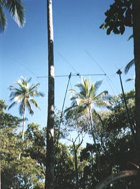
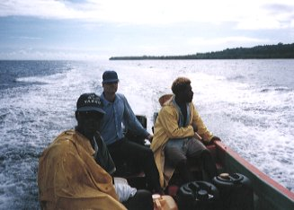
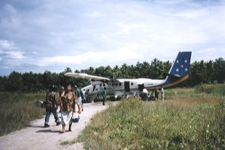
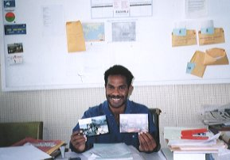
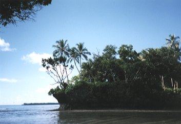
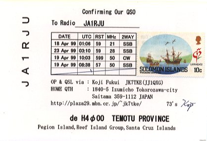
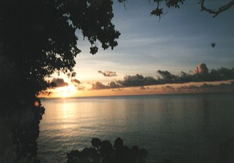

話題の局・QSL

H40OO Temotu Is.


H40OOを運用する福井さん／自作3eleアンテナ


H40OOの運用地・Pigeon Isまでの渡し船(2時間ほど掛かる)／Temotu Isの飛行場


日本で研修を受けたこともあるというSolomonの免許担当者
壁にVK9NS・JimのQSLが貼ってあった


H40OOからの6m初QSOは4月19日／Honiara・Solomon Is.から運用したH44OO(右)

H4000の運用の模様は、JK7TKE・福井さんのホームページに紹介されている
http://plaza29.mbn.or.jp/~jk7tke/